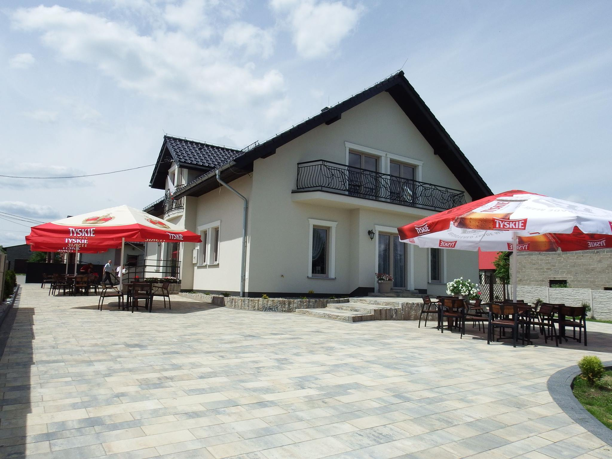
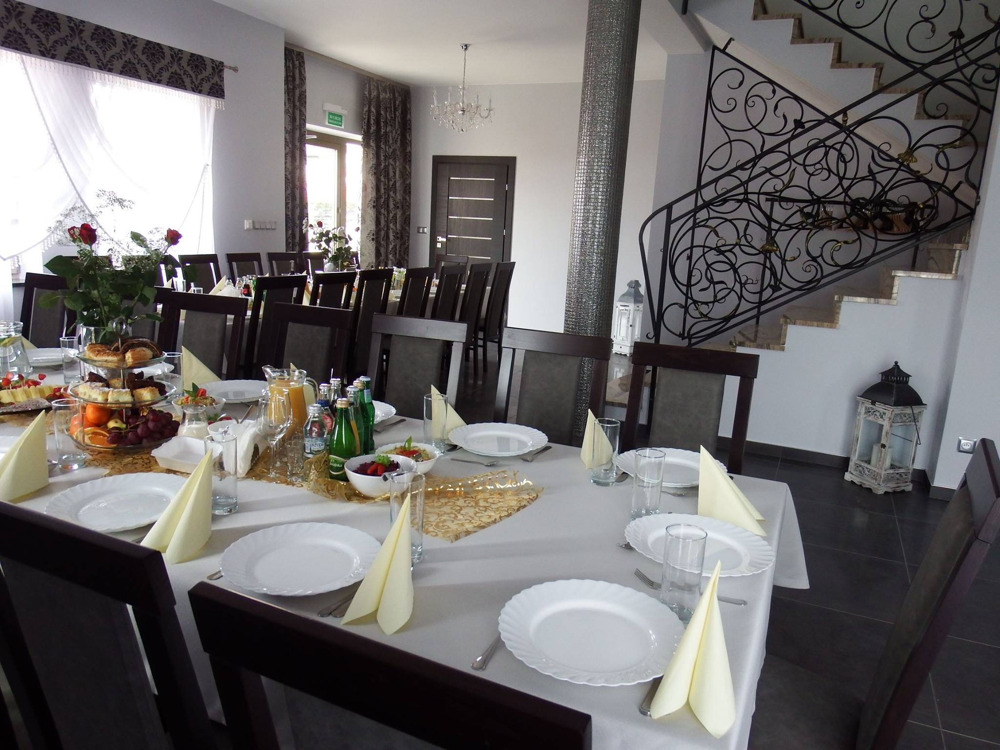
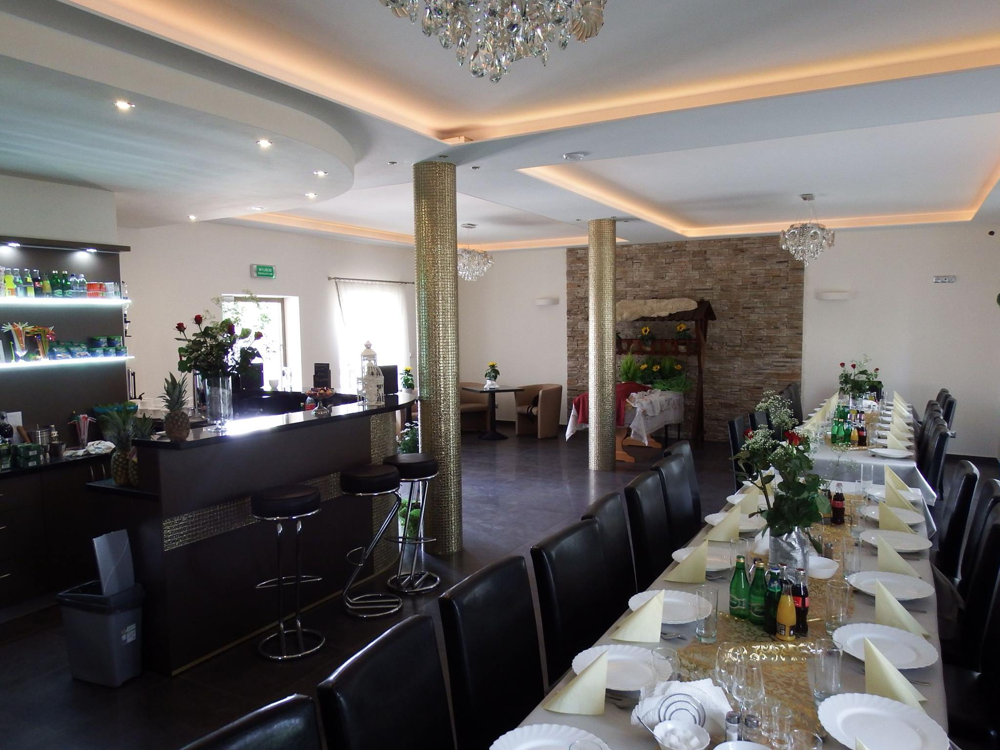

Serdecznie zapraszamy Państwa na codzienne obiady, uroczyste kolacje i niezliczone jubileuszowe fety. Oprócz codziennej karty menu organizujemy kameralne przyjęcia, bankiety oraz wszelkiego rodzaju imprezy okolicznościowe.
Podchodzimy do każdego przyjęcia indywidualnie, przywiązujemy ogromną wagę do poznania potrzeb i oczekiwań naszych klientów. Wszystkie dania przyrządzamy ze świeżych, naturalnych składników od sprawdzonych, regionalnych dostawców.



Zapraszamy do kontaktu telefonicznego – chętnie odpowiemy na wszelkie pytania i pomożemy zaplanować Państwa wydarzenie.